1) Decida se cada afirmação a seguir é verdadeira ou falsa e marque com caneta sua resposta no quadro abaixo. Atenção: responda todos os itens, use "N = não sei" caso você não saiba a resposta. Cada resposta certa vale 0.3, cada resposta errada vale -0.2, cada resposta N vale 0. Respostas confusas e ou rasuradas valerão -0.2.
1.a)
Considere as retas de equações paramétricas
Falso: As retas podem ser paralelas e diferentes (ou seja, com interseção vazia). Por exemplo, r=(1+t,0+t,0+t) e s=(t,t,t), 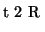. Temos que p=(1,0,0), q=(0,0,0), v=w=(1,1,1). Claramente, 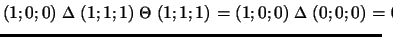. As retas são disjuntas, observe que o ponto (1,0,0) de r não pertence a s.
1.b) A multiplicação de duas matrizes ortogonais é uma matriz ortogonal.
Verdadeiro:
Ser ortogonal significa, A At=I ou
A-1=At.
Sejam A e B matrizes ortogonais. Portanto,
A At=I e B Bt=I. Devemos ver que
(AB)(AB)t=I. Para isto é suficiente observar que
1.c)
Sejam A uma matriz 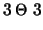 cujo polinômio
caraterístico é
Falso:
Considere a matriz
1.d) Seja A uma matriz 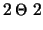 ortogonal e simétrica. Então A representa um espelhamento.
Falso:
Considere a matriz
1.e) Considere o plano 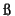 de equação cartesiana ax+by+cz=d e a reta r=(p1+tv1, p2+tv2, p3+tv3). Suponha que 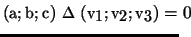. Então a reta e o plano têm exatamente um ponto de interseção.
Falso: A condição significa que a reta é paralela ao plano. Portanto, ou é disjunta (nao há ponto de interseção) ou está contida (há infinitos pontos de interseção). Por exemplo, considere o plano x+y+z=1 e a reta (1+t,-1,1-t), . Temos 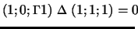 e a reta está contida no plano.
1.f)
Considere a matriz
Falso: Se os autovalores fossem 0, 6 e 2 a matriz teria determinante nulo (o produto dos autovalores). Mas o determinante é 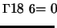.
1.g)
Considere uma transformação linear P de
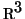 tal que
 .
Então P é uma projeção ortogonal.
.
Então P é uma projeção ortogonal.
Falso: Considere a identidade.
1.h) O produto de duas matrizes inversíveis é uma matriz inversível.
Verdadeiro:
Observe que ser inversível é equivalente a ter
determinante não nulo. Sejam A e B inversíveis.
Então,
1.i) Os vetores 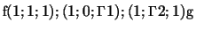formam uma base ortonormal.
Falso:
Para formar uma base ortonormal os vetores devem ser ortogonais
(como acontece neste caso) e unitários (o que não acontece neste
caso), no nosso caso, os vetores possuem módulo 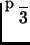, 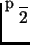 e
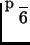.
| Itens | V | F | N | |
| 1.a | f | |||
| 1.b | v | |||
| 1.c | f | |||
| 1.d | f | |||
| 1.e | f | |||
| 1.f | f | |||
| 1.g | f | |||
| 1.h | v | |||
| 1.i | f |
2) Considere o plano x+y+z=0, o ponto p=(1,1,1) e as retas r1=(t,1-t,t) e r2=(1-t, 1+t,t), . Determine
Resposta: O vetor diretor da reta r é o vetor normal do plano, (1,1,1). Um ponto de r é (1,1,1). Logo uma equação paramétrica é (1+t, 1+t,1+t), .
Caso v. prefira dar equações cartesianas, observe que os planos x-z=0 e y-z=0 contém a reta.
Seja o plano procurado. Os vetores diretores das retas (1,-1,1) e (-1,1,1) são vetores paralelos ao plano. Logo o vetor normal do plano pode ser obtido como 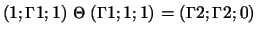. Logo o plano é da forma 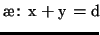, onde d é determinado por 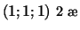, ou seja d=1+1=2. Logo, 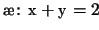.
Para calcular a distância entre as retas consideramos
o pontos
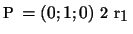 e
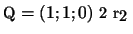 e o vetor
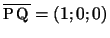.
A distância entre as retas é
O item anterior mostra que as retas são reversas. Elas não são paralelas (pois os vetores diretores não são proporcionais). Logo ou são reversas ou se interceptam em um ponto (neste último caso a distância seria 0).
O vetor diretor de r2 é (-1,1,1). O vetor normal ao plano é (1,1,1). Como 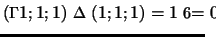 o plano e a reta não são paralelos. Logo se interceptam em um ponto.
3) Considere a projeção ortogonal P no plano 2x+2y+2z=0 e a projeção Q no plano x+y+z=0 na direção da reta (t,-t,0), .
Resposta: Como se trata de uma projeção, os autovalores de P são 1 (com multiplicidade dois) e 0 (simples).
Respeito a projeção Q. A direção de projeção é paralela ao plano x+y+z=0, logo Q não está definida. Portanto, não é possível falar de autovetores nem autovalores de Q, nem da matriz associada a Q. Logo não é necessário responder a questão (3c). Respeito a (3d), a transformação não está definida.
Uma base de autovetores de P está formada por dois vetores
l.i. do plano de projeção (autovetores associados ao autovalor
duplo 1) e um vetor normal (associado ao autovalor 0).
Logo uma base é
Uma forma diagonal de P é
4)
Considere a matriz
Resposta:
O polinômio característico de
A é
Uma base de autovetores é obtida da seguinte forma.
autovetores associados a 6: são as soluções não triviais do sistema,

autovetores associados a 4: são as soluções não triviais do sistema,
autovetores associados a -2: Como a matriz é simétrica, os autovetores associados a -2 devem ser ortogonais a (1,0,1) e (0,1,0). Logo um autovetor é (1,0,-1).
Portanto, uma base
de autovetores é
Na base a matriz de A é diagonal da forma
Considerando agora uma base ortonormal de autovetores de A,
Como A tem determinante não nulo (o produto dos autovetores é
diferente
de zero) existe A-1. Temos